Code
# Load libraries
library(tidyverse) # For ggplot, dplyr, and friends
library(readxl) # For reading Excel filesFor this example, I’m going to use real world data to demonstrate the typical process for loading data, cleaning it up a bit, and mapping specific columns of the data onto the parts of a graph using the grammar of graphics and ggplot().
The data I’ll use comes from the BBC’s corporate charity, BBC Children in Need, which makes grants to smaller UK nonprofit organizations that work on issues related to childhood poverty. An organization in the UK named 360Giving helps nonprofits and foundations publish data about their grant giving activities in an open and standardized way, and (as of May 2020) they list data from 126 different charities, including BBC Children in Need.
If you want to follow along with this example (highly recommended!), you can download the data directly from 360Giving or by using this link:
I got carried away with this because I wanted to make it as comprehensive and detailed as possible, so it starts off with nothing and walks through the process of downloading data, creating a new project, and getting everything started. As such, it is ridiculously long (1 hour 😱 😱). Remember that there’s no requirement that you watch these things—they’re simply for your reference so you can see what doing this R stuff looks like in real time. The content all below the video is roughly the same (more polished even).
That said, it is a useful demonstration of how to get everything started and what it looks like to do an entire analysis, so there is value in it. Watch just the first part, or watch it on 2x or something.
And I promise future examples will not be this long!
This is a slightly cleaned up version of the code from the video.
First, we need to load a few libraries: {tidyverse} (as always) and {readxl} for reading Excel files:
# Load libraries
library(tidyverse) # For ggplot, dplyr, and friends
library(readxl) # For reading Excel filesWe’ll then load the original Excel file. I placed this file in a folder named data in my RStudio Project folder for this example. I like to read original data into an object named whatever_raw just in case it takes a long time to load (that way I don’t have to keep reloading it every time I add a new column or do anything else with it). It’s also good practice to keep a pristine, untouched copy of your data.
# Load the original Excel file
bbc_raw <- read_excel("data/360-giving-data.xlsx")There may be some errors reading the file—you can ignore those in this case.
Next we’ll add a couple columns and clean up the data a little. In the video I did this non-linearly—I came back to the top of the document to add columns when I needed them and then reran the chunk to create the data.
We’ll extract the year from the Award Date column, rename some of the longer-named columns, and make a new column that shows the duration of grants. We’ll also get rid of 2015 since there are so few observations then.
Note the strange use of `s around column names like `Award Date`. This is because R technically doesn’t allow special characters like spaces in column names. If there are spaces, you have to wrap the column names in backticks. Because typing backticks all the time gets tedious, we’ll use rename() to rename some of the columns:
bbc <- bbc_raw |>
# Extract the year from the award date
mutate(grant_year = year(`Award Date`)) |>
# Rename some columns
rename(grant_amount = `Amount Awarded`,
grant_program = `Grant Programme:Title`,
grant_duration = `Planned Dates:Duration (months)`) |>
# Make a new text-based version of the duration column, recoding months
# between 12-23, 23-35, and 36+. The case_when() function here lets us use
# multiple if/else conditions at the same time.
mutate(grant_duration_text = case_when(
grant_duration >= 12 & grant_duration < 24 ~ "1 year",
grant_duration >= 24 & grant_duration < 36 ~ "2 years",
grant_duration >= 36 ~ "3 years"
)) |>
# Get rid of anything before 2016
filter(grant_year > 2015) |>
# Make a categorical version of the year column
mutate(grant_year_category = factor(grant_year))First let’s look at the distribution of grant amounts with a histogram. Map grant_amount to the x-axis and don’t map anything to the y-axis, since geom_histogram() will calculate the y-axis values for us:
ggplot(data = bbc, mapping = aes(x = grant_amount)) +
geom_histogram()
## `stat_bin()` using `bins = 30`. Pick better value `binwidth`.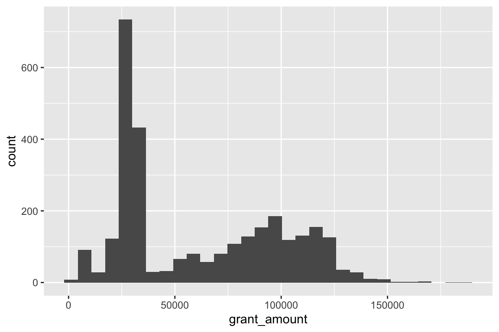
Notice that ggplot warns you about bin widths. By default it will divide the data into 30 equally spaced bins, which will most likely not be the best for your data. You should always set your own bin width to something more appropriate. There are no rules for correct bin widths. Just don’t have them be too wide:
ggplot(data = bbc, mapping = aes(x = grant_amount)) +
geom_histogram(binwidth = 100000)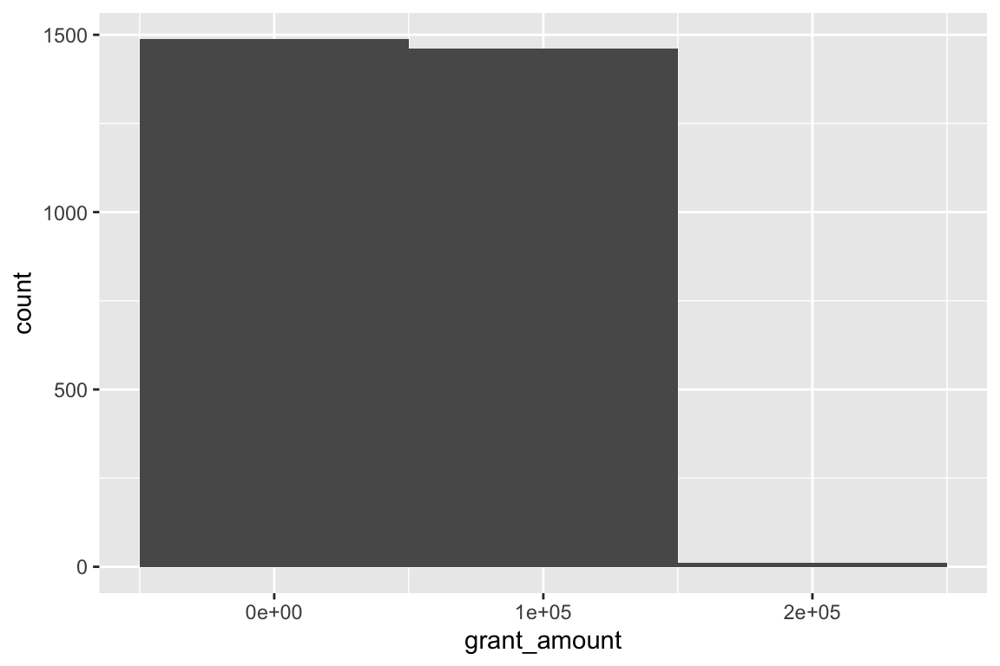
Or too small:
ggplot(data = bbc, mapping = aes(x = grant_amount)) +
geom_histogram(binwidth = 500)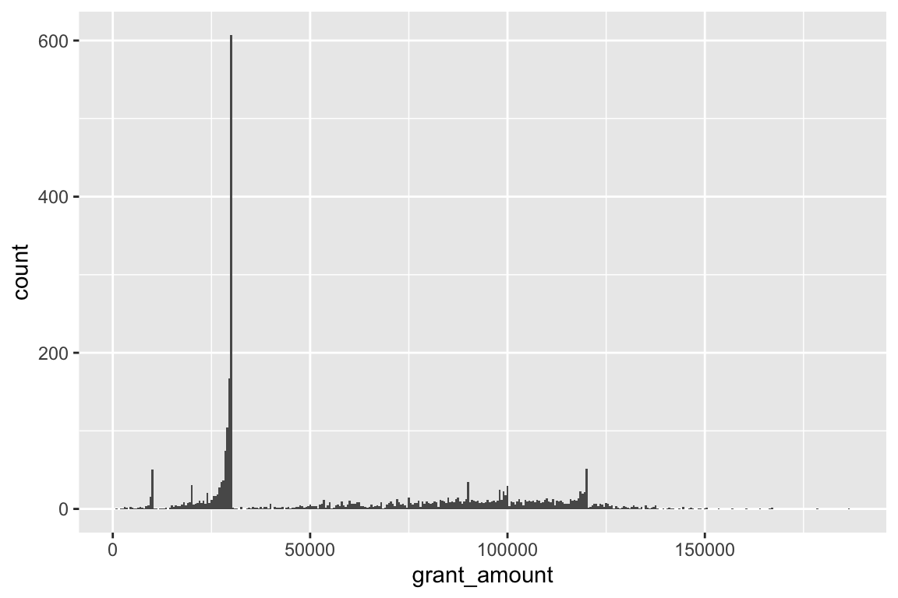
£10,000 seems to fit well. It’s often helpful to add a white border to the histogram bars, too:
ggplot(data = bbc, mapping = aes(x = grant_amount)) +
geom_histogram(binwidth = 10000, color = "white")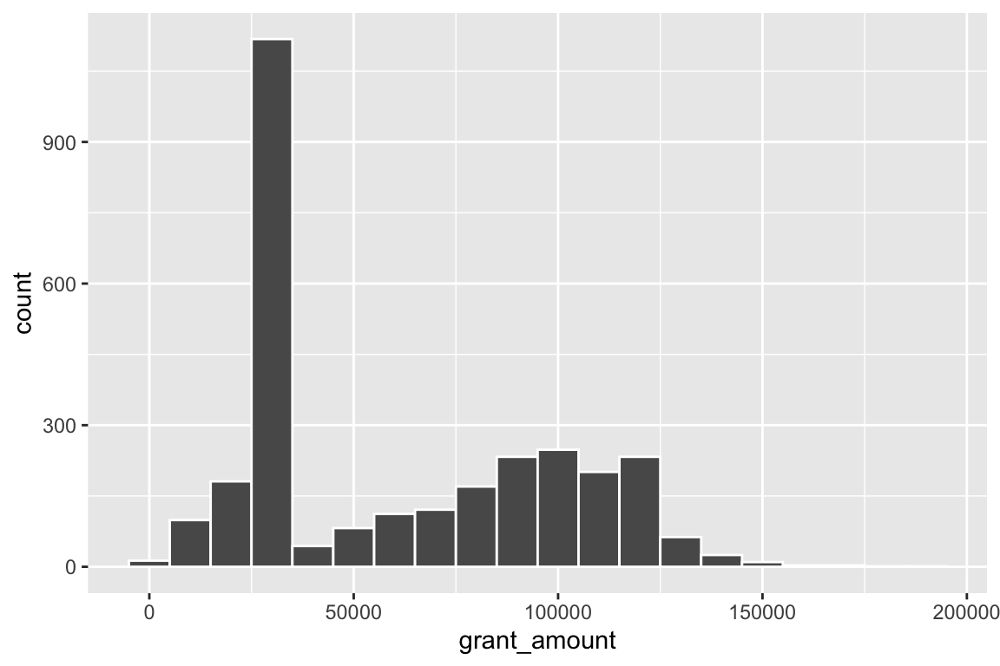
We can map other variables onto the plot, like mapping grant_year_category to the fill aesthetic:
ggplot(bbc, aes(x = grant_amount, fill = grant_year_category)) +
geom_histogram(binwidth = 10000, color = "white")
That gets really hard to interpret though, so we can facet by year with facet_wrap():
ggplot(bbc, aes(x = grant_amount, fill = grant_year_category)) +
geom_histogram(binwidth = 10000, color = "white") +
facet_wrap(vars(grant_year))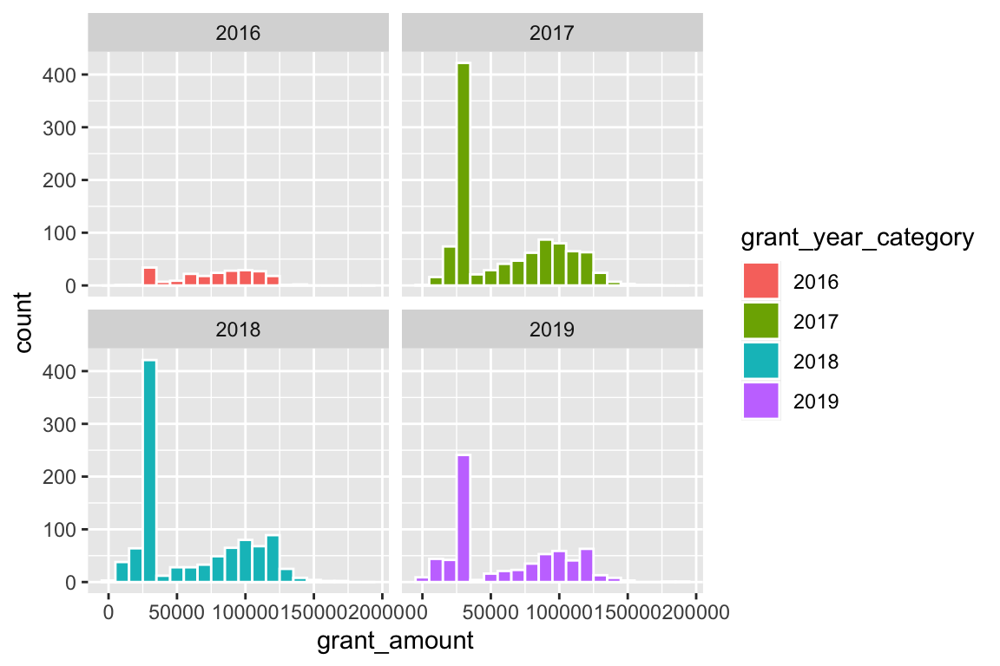
Neat!
Next let’s look at the data using points, mapping year to the x-axis and grant amount to the y-axis:
ggplot(bbc, aes(x = grant_year_category, y = grant_amount)) +
geom_point()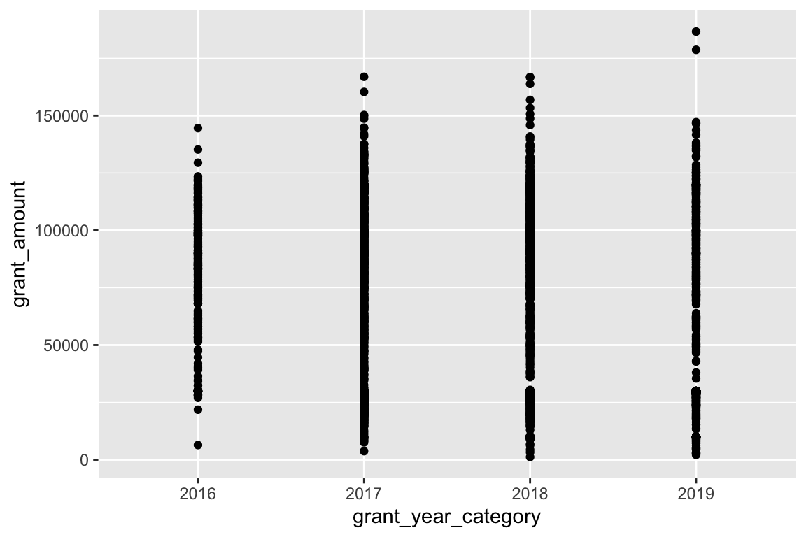
We have some serious overplotting here, with dots so thick that it looks like lines. We can fix this a couple different ways. First, we can make the points semi-transparent using alpha, which ranges from 0 (completely invisible) to 1 (completely solid).
ggplot(bbc, aes(x = grant_year_category, y = grant_amount)) +
geom_point(alpha = 0.1)
We can also randomly space the points to spread them out using position_jitter():
ggplot(bbc, aes(x = grant_year_category, y = grant_amount)) +
geom_point(position = position_jitter())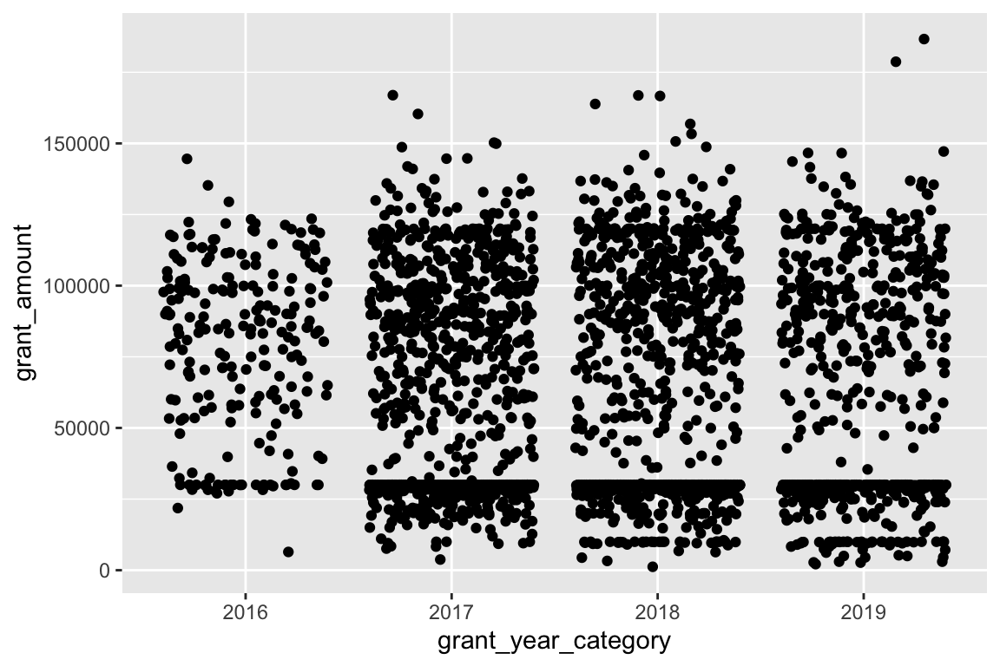
One issue with this, though, is that the points are jittered along the x-axis (which is fine, since they’re all within the same year) and the y-axis (which is bad, since the amounts are actual numbers). We can tell ggplot to only jitter in one direction by specifying the height argument—we don’t want any up-and-down jittering:
ggplot(bbc, aes(x = grant_year_category, y = grant_amount)) +
geom_point(position = position_jitter(height = 0))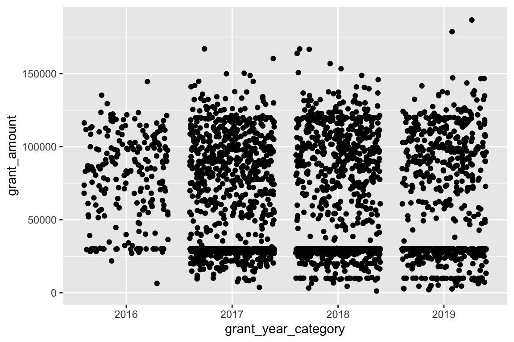
There are some weird clusters around £30,000 and below. Let’s map grant_program to the color aesthetic, which has two categories—regular grants and small grants—and see if that helps explain why:
ggplot(bbc, aes(x = grant_year_category, y = grant_amount, color = grant_program)) +
geom_point(position = position_jitter(height = 0))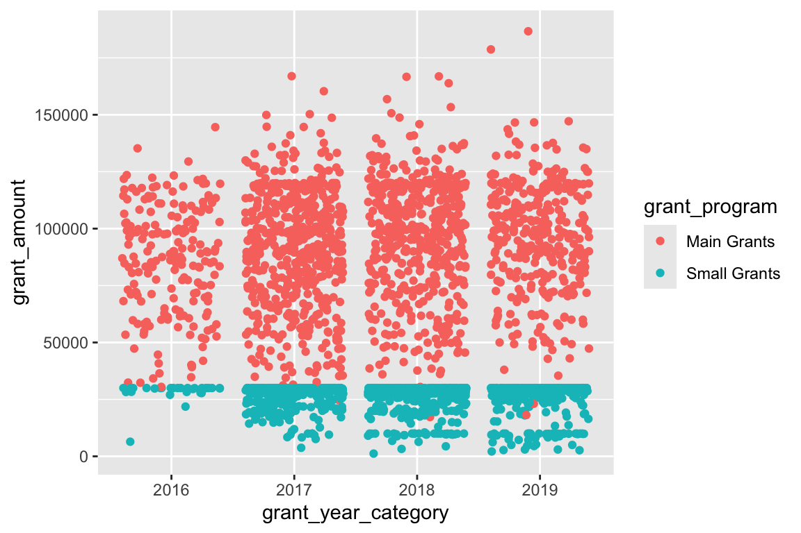
It does! We appear to have two different distributions of grants: small grants have a limit of £30,000, while regular grants have a much higher average amount.
We can add summary information to the plot by only changing the geom we’re using. Switch from geom_point() to geom_boxplot():
ggplot(bbc, aes(x = grant_year_category, y = grant_amount, color = grant_program)) +
geom_boxplot()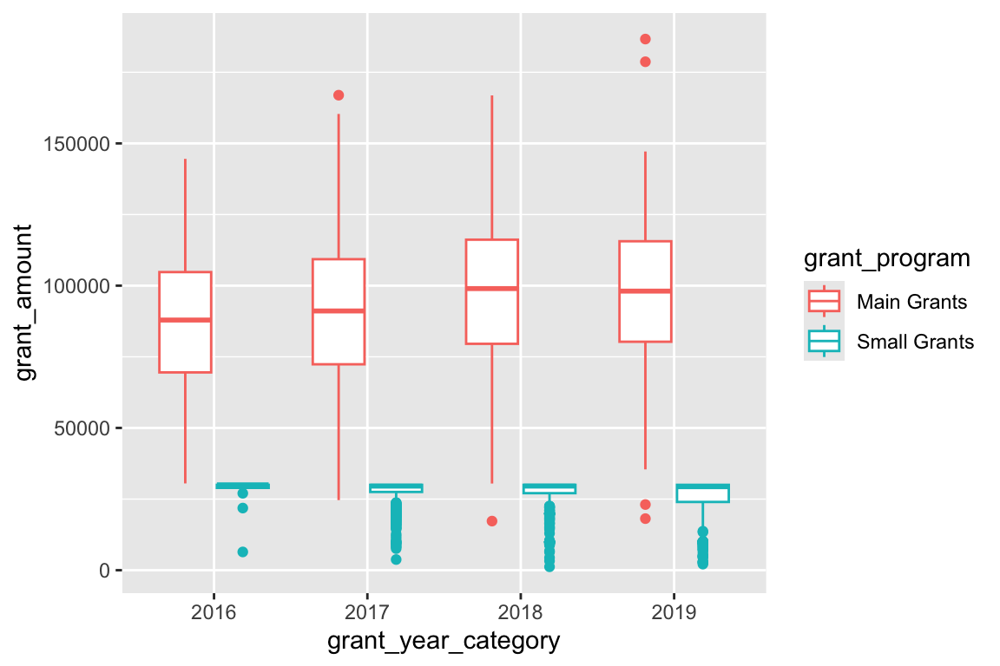
We can also make smaller summarized datasets with {dplyr} functions like group_by() and summarize() and plot those. First let’s look at grant totals, averages, and counts over time:
bbc_by_year <- bbc |>
group_by(grant_year) |> # Make invisible subgroups for each year
summarize(total = sum(grant_amount), # Find the total awarded in each group
avg = mean(grant_amount), # Find the average awarded in each group
number = n()) # n() is a special function that shows the number of rows in each group
# Look at our summarized data
bbc_by_year
## # A tibble: 4 × 4
## grant_year total avg number
## <dbl> <dbl> <dbl> <int>
## 1 2016 17290488 78238. 221
## 2 2017 62394278 59765. 1044
## 3 2018 61349392 60205. 1019
## 4 2019 41388816 61136. 677Because we used summarize(), R shrank our data down significantly. We now only have a row for each of the subgroups we made: one for each year. We can plot this smaller data. We’ll use geom_col() for now (but in the next session you’ll learn why this is actually bad for averages!)
# Plot our summarized data
ggplot(bbc_by_year, aes(x = grant_year, y = avg)) +
geom_col()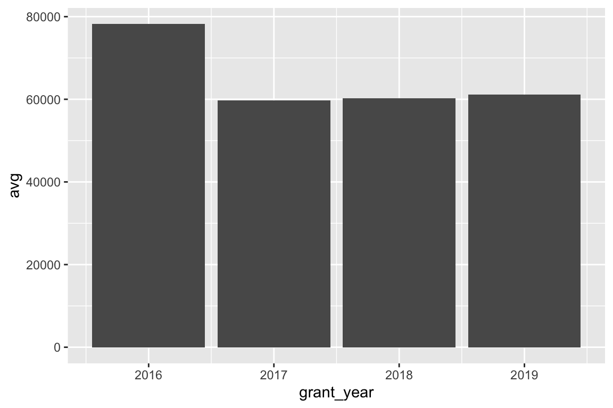
ggplot(bbc_by_year, aes(x = grant_year, y = total)) +
geom_col()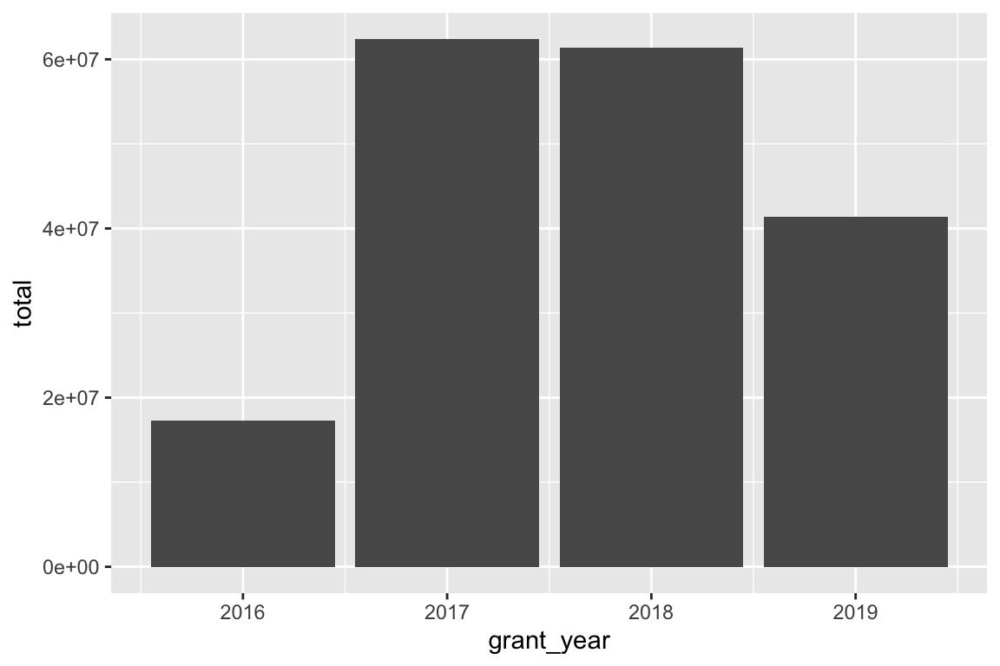
ggplot(bbc_by_year, aes(x = grant_year, y = number)) +
geom_col()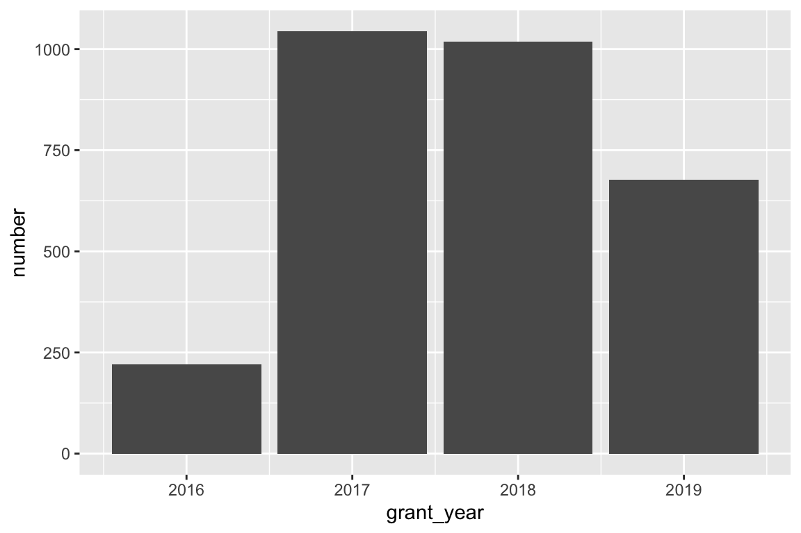
Based on these charts, it looks like 2016 saw the largest average grant amount. In all other years, grants averaged around £60,000, but in 2016 it jumped up to £80,000. If we look at total grants, though, we can see that there were far fewer grants awarded in 2016—only 221! 2017 and 2018 were much bigger years with far more money awarded.
We can also use multiple aesthetics to reveal more information from the data. First we’ll make a new small summary dataset and group by both year and grant program. With those groups, we’ll again calculate the total, average, and number.
bbc_year_size <- bbc |>
group_by(grant_year, grant_program) |>
summarize(total = sum(grant_amount),
avg = mean(grant_amount),
number = n())
bbc_year_size
## # A tibble: 8 × 5
## # Groups: grant_year [4]
## grant_year grant_program total avg number
## <dbl> <chr> <dbl> <dbl> <int>
## 1 2016 Main Grants 16405586 86345. 190
## 2 2016 Small Grants 884902 28545. 31
## 3 2017 Main Grants 48502923 90154. 538
## 4 2017 Small Grants 13891355 27453. 506
## 5 2018 Main Grants 47347789 95652. 495
## 6 2018 Small Grants 14001603 26721. 524
## 7 2019 Main Grants 33019492 96267. 343
## 8 2019 Small Grants 8369324 25058. 334Next we’ll plot the data, mapping the grant_program column to the fill aesthetic:
ggplot(bbc_year_size, aes(x = grant_year, y = total, fill = grant_program)) +
geom_col()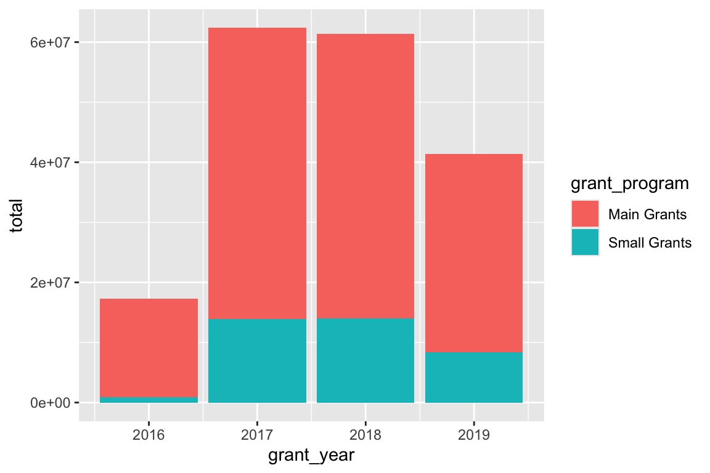
By default, ggplot will stack the different fill colors within the same bar, but this makes it a little hard to make comparisons. While we can see that the average small grant amount was a little bigger in 2017 than in 2019, it’s harder to compare average main grant amount, since the bottoms of those sections don’t align.
To fix this, we can use position_dodge() to tell the columns to fit side-by-side:
ggplot(bbc_year_size, aes(x = grant_year, y = total, fill = grant_program)) +
geom_col(position = position_dodge())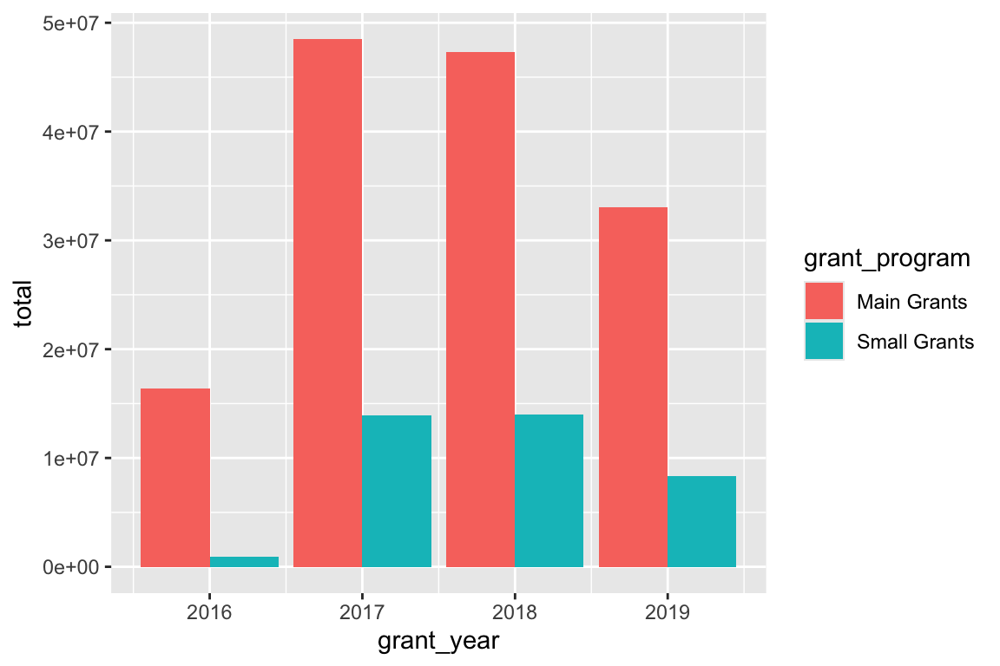
Instead of dodging, we can also facet by grant_program to separate the bars:
ggplot(bbc_year_size, aes(x = grant_year, y = total, fill = grant_program)) +
geom_col() +
facet_wrap(vars(grant_program))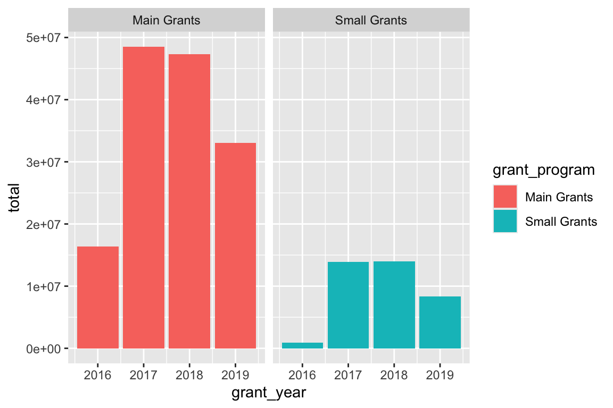
We can put these in one column if we want:
ggplot(bbc_year_size, aes(x = grant_year, y = total, fill = grant_program)) +
geom_col() +
facet_wrap(vars(grant_program), ncol = 1)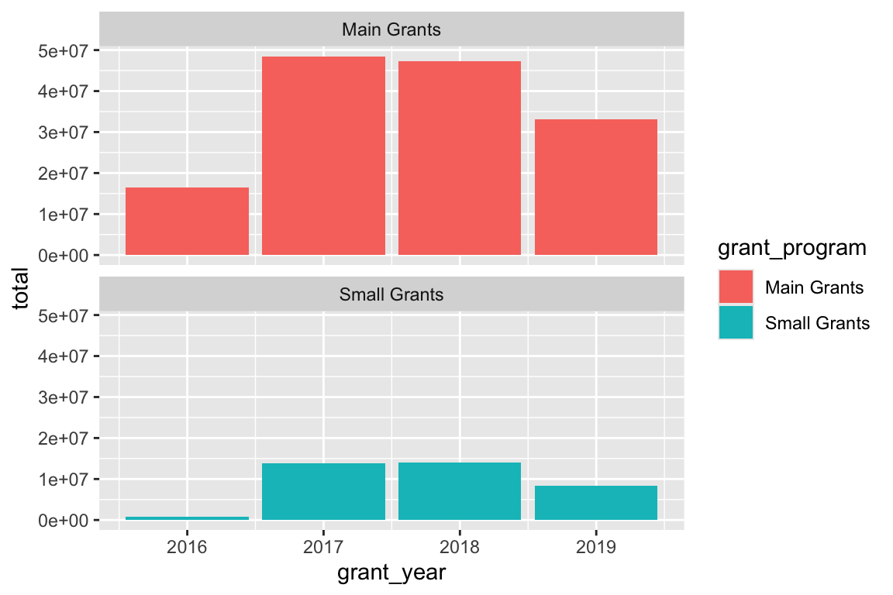
Finally, we can include even more variables! We have a lot of aesthetics we can work with (size, alpha, color, fill, linetype, etc.), as well as facets, so let’s add one more to show the duration of the awarded grant.
First we’ll make another smaller summarized dataset, grouping by year, program, and duration and summarizing the total, average, and number of awards.
bbc_year_size_duration <- bbc |>
group_by(grant_year, grant_program, grant_duration_text) |>
summarize(total = sum(grant_amount),
avg = mean(grant_amount),
number = n())
bbc_year_size_duration
## # A tibble: 21 × 6
## # Groups: grant_year, grant_program [8]
## grant_year grant_program grant_duration_text total avg number
## <dbl> <chr> <chr> <dbl> <dbl> <int>
## 1 2016 Main Grants 2 years 97355 48678. 2
## 2 2016 Main Grants 3 years 16308231 86746. 188
## 3 2016 Small Grants 3 years 884902 28545. 31
## 4 2017 Main Grants 1 year 59586 29793 2
## 5 2017 Main Grants 2 years 825732 82573. 10
## 6 2017 Main Grants 3 years 47617605 90528. 526
## 7 2017 Small Grants 1 year 10000 10000 1
## 8 2017 Small Grants 2 years 245227 18864. 13
## 9 2017 Small Grants 3 years 13636128 27716. 492
## 10 2018 Main Grants 1 year 118134 59067 2
## # ℹ 11 more rowsNext, we’ll fill by grant program and facet by duration and show the total number of grants awarded
ggplot(bbc_year_size_duration, aes(x = grant_year, y = number, fill = grant_program)) +
geom_col(position = position_dodge(preserve = "single")) +
facet_wrap(vars(grant_duration_text), ncol = 1)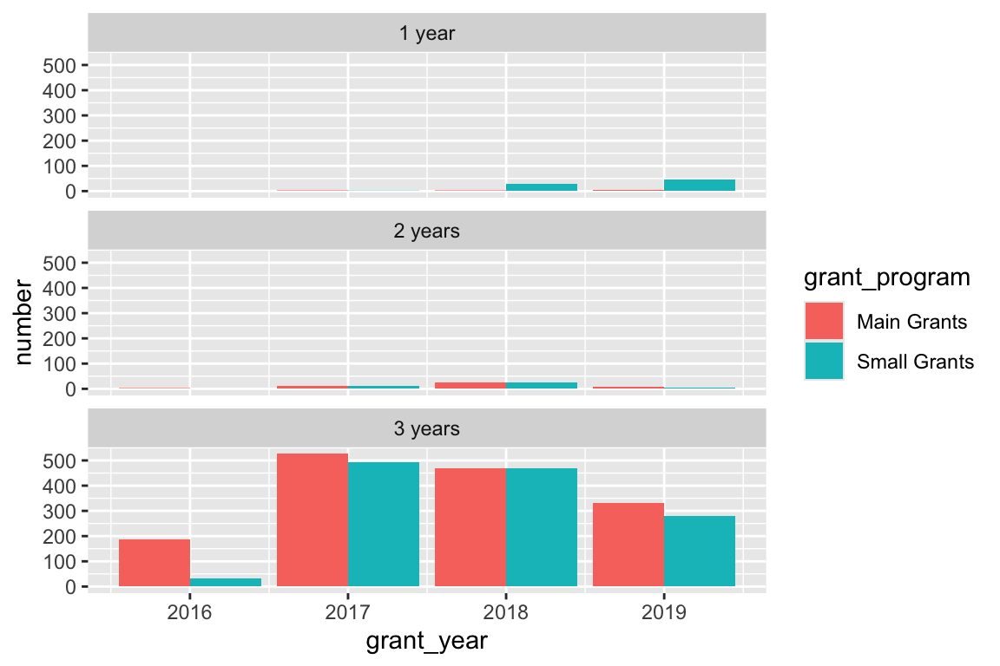
The vast majority of BBC Children in Need’s grants last for 3 years. Super neat.